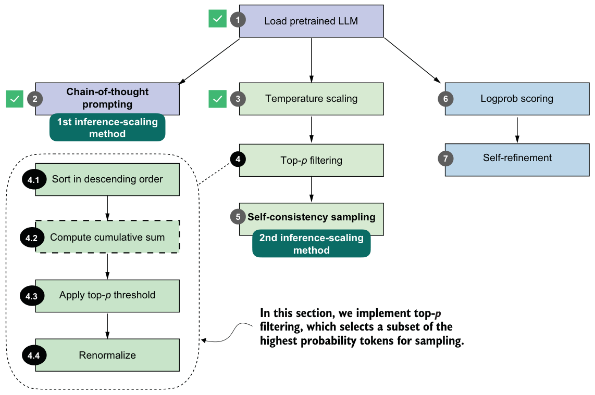

Multinomial sampling
- “Berlin”: 0.70
- “Munich”: 0.20
- “Hamburg”: 0.10
First, let’s run the count_samples function on the probability scores that we obtained by applying a temperature of 5:
torch.manual_seed(123)
count_samples(next_token_probas, tokenizer=tokenizer)The output is as follows:
'}': 2x
' </': 2x
' represent': 2x
' Inf': 2x
'()*': 2x
' beside': 2x
' Kob': 2x
'': 2xAs you can see, even though the default sample size is 1,000, none of the sampled tokens appear more than twice. Also, all of these are nonsense tokens in the context of the "The capital of Germany is" query. The reason for these nonsensical results is that we used a temperature value that is much too high.
Let’s try a lower temperature value of 0.35, which sharpens the score distribution and makes it more likely to select a meaningful next token:
torch.manual_seed(123)
probas_lowT = torch.softmax(
scale_logits_by_temperature(next_token_logits, 0.35), dim=-1
)In this case, we see the following output:
' __': 158x
' Berlin': 435x
' ____': 169x
' ______': 209x
' Munich': 3x
' Hamburg': 3x
' _____': 18xThis output makes much more sense as a set of next-token candidates for our "The capital of Germany is" query. Out of the 1,000 samples, the " Berlin" token was drawn 435 times. You can check via print(probas_lowT[0, 19_846]) that the probability of drawing this token is approximately 42% at the temperature value 0.35. To make it even more likely that " Berlin" will be sampled, we could further reduce the temperature.
Notice that some of the other, rarer candidates also make sense. For example, both" Munich" and " Hamburg" are big cities in Germany, so they are not completely unrelated to the query. The underscore responses (" ____") are likely due to the model having seen text in the form of a quiz with a placeholder; e.g., "The capital of Germany
is ____".You may wonder, if " Berlin" is the correct answer, what’s the point of making the model occasionally give the wrong answer by adding this temperature rescaling and multinomial sampling? For different kinds of queries, introducing randomness during sampling helps the model explore alternative responses instead of always choosing the single most likely token. This variability can be useful for creative or open-ended tasks, where there may be multiple valid completions.
Specifically, in reasoning tasks, we can use this sampling diversity through techniques such as self-consistency (discussed in section 4.6), which generate multiple candidate answers and compare them to improve answer accuracy.
4.4.4Adding temperature scaling to the text generation function
Before we introduce another improvement to the text generation process by adding a token-probability selection filter, let’s add the temperature-scaling modification to the text generation function so we can more readily generate new tokens with the model.
from reasoning_from_scratch.qwen3 import KVCache
@torch.inference_mode()
def generate_text_temp_stream_cache(
model,
token_ids,
max_new_tokens,
eos_token_id=None,
temperature=0.
):
model.eval()
cache = KVCache(n_layers=model.cfg["n_layers"])
model.reset_kv_cache()
out = model(token_ids, cache=cache)[:, -1]
for _ in range(max_new_tokens):
########################################
# NEW:
orig_device = token_ids.device
if temperature is None or temperature == 0.0:
next_token = torch.argmax(out, dim=-1, keepdim=True)
else:
logits = scale_logits_by_temperature(out, temperature) probas = torch.softmax(logits, dim=-1)
next_token = torch.multinomial(probas.cpu(), num_samples=1)
next_token = next_token.to(orig_device)
#########################################
if (eos_token_id is not None
and torch.all(next_token == eos_token_id)):
break
yield next_token
out = model(next_token, cache=cache)[:, -1]
The generate_text_temp_stream_cache in listing 4.8 is similar to the generate_text_stream_cache from chapter 2. What’s new is that it now includes temperature rescaling and sampling (below the # New comment indicator in the code).
The following code shows how temperature scaling and sampling are integrated into the token-generation loop itself. This function can be passed into the more flexible generate_text_stream_concat_flex wrapper introduced in listing 4.2, which keeps the outer prompt-handling code unchanged while letting us swap in different decoding strategies:
torch.manual_seed(123)
response = generate_text_stream_concat_flex(
model, tokenizer, prompt, device,
max_new_tokens=2048, verbose=True,
generate_func=generate_text_temp_stream_cache,
temperature=1.1
)The output is \boxed{$x = \frac{90}{7}$}. The correct answer is 83, so the model is still wrong, but this was meant as a demonstration to show that we can tweak the answer by using temperature scaling and sampling.
Choosing temperature settings
In the next section, we’ll improve the sampling process.
4.5Balancing diversity and coherence with top-p sampling
You’ve seen how temperature scaling and sampling (via torch.multinomial) can increase the diversity of the LLM responses, for better or for worse. Specifically, you saw that this approach may end up sampling tokens that are unrelated to the user query.
We’ll now improve the sampling process by adding a top-p filter (figure 4.12) so that very low-confidence tokens are not sampled by accident. The top-p sampling process described in this section is also known as nucleus sampling.

Figure 4.12 summarizes the four steps that make up the top-p filter: sorting the token probabilities, computing their cumulative sum, selecting the subset that satisfies the top-p cutoff, and renormalizing the remaining probabilities so that they again form a valid distribution. The renormalization step is necessary, because once we remove all low-probability tokens, the remaining probabilities no longer sum to one. To sample correctly, we need to rescale the remaining values so that they represent a proper probability distribution.
We’ll now walk through steps 4.1 through 4.4 from figure 4.12 in detail.